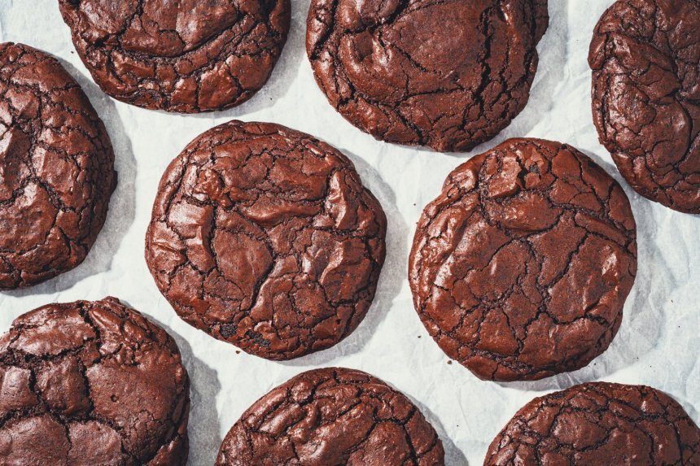

Šokoladiniai braunio sausainiai
Ingredientai:
- 200 gramų juodojo šokolado (naudojau 70%)
- 2 vienetai kiaušinių
- 130 gramų kvietinių miltų
- 125 gramai sviesto
- 125 gramai cukraus
- 90 gramųrudojo cukraus
- 3 šaukštai kakavos (nesaldintos)
- 1 šaukštelis maltos vanilės
- 1 šaukštelis kepimo miltelių
- 1 žiupsnelis druskos
Paruošimas
Paruošimo laikas: Apie 30 min.
- Šiems sausainiams svarbus laikas, tad pasiruoškite, susisverkite ir susidėkite visus ingredientus, kad būtų galima imti ir gaminti. Kepimo formas ištieskite kepimo popieriumi, nes visus sausainius reikės kepti vienu metu. Orkaitę reikėtų įkaitinti iki 180 C laipsnių temperatūros.
- Šokoladą sulaužyti gabalėliais, sviestą supjaustyti kubeliais ir dėti į karščiui atsparų dubenį, ištirpinti karšto vandens vonelėje - į puodą įpilti vandens, užvirti, dėti dubenį ir nuolat maišyti iki kol šokoladas ir sviestas ištirps, o masė taps vientisa. Tuomet atidėti.
- Į kitą dubenį berti tiek baltą, tiek rudąjį cukrų, įmušti kiaušinius, berti vanilę ir elektriniu plaktuvu vidutiniu greičiu išplakti. Plakti reikėtų būtent 5 minutes. Masė turi būti blyški, puri ir blizgi. Tuomet supilti šokolado ir sviesto masę, minutę plakti iki kol visiškai susimaišys.
- Į kitą dubenį suberti miltus, kakavą, kepimo miltelius, druską ir išmaišyti. Paruoštą mišinį suberti į dubenį su išplakta mase ir išmaišyti iki vientisos masės. Tešla turi būti drėgna, minkšta, tokia švelni, beveik nelimpanti prie pirštų, paėmus šaukštu, nuo jo nenubėgti, o daugmaž laikytis ant jo. Tešlos laikyti nereikia, net tikrai nerekomenduojama. Tad kai pasigaminate tešlą, iš karto formuokite sausainius ir kepkite.
- Jei turite ledų šaukštą, imkite tešlos su juo ir sudėkite ant kepimo formos. Nieko spausti ar lyginti nereikia, palikite tokį rutuliuką koks susiformavo, o tarp sausainių palikite didesnius tarpus. Aš kepimo formoje dariau 5 sausainius.
- Jei ledų šaukšto neturite, sausainius formuokite valgomuoju šaukštu. Vienam sausainiui reikės maždaug 2 šaukštų tešlos, tiesiog dėkite šaukštą tešlos, o ant viršaus dar vieną šaukštą, jei naudosite didesnius, kupinus šaukštus, užteks ir 1.5 šaukšto.
- Šaukite sausainius į orkaitę ir kepkite būtent 12 minučių, nes jei kepsite ilgiau, jie bus sausesni viduje. Kai ištrauksite, jie bus dar minkštučiai, tačiau ištraukus sausainius jie dar keps nuo savo šilumos, o vėliau vėsdami sutvirtės.